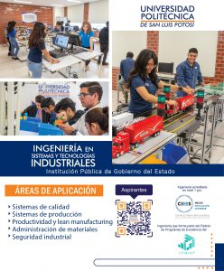

Licenciatura en Administración y Gestión (LAG)

Nivel:
Licenciatura
Título otorgado:
Licenciado en Administración y Gestión.
Duración:
9 Semestres
Descripción carrera:
La Licenciatura en Administración y Gestión tiene por objetivo formar profesionistas con capacidades gerenciales altamente competitivos que respondan a los desafíos a los que se enfrentan las organizaciones en ambientes de incertidumbre, dirigiendo eficazmente sus recursos y funciones, a través de una visión vanguardista para diseñar, evaluar y aplicar estrategias que permitan innovar o mejorar procesos en las organizaciones en un marco de sustentabilidad. (Perfil Profesional UPSLP – CUP); Junio 2010).
Plan de estudios

Infraestructura / Recursos
- Cámara de GESELL
- Centro de Negocios.
- Centro de Información y Documentación.
- Centros de Cómputo.
Certificaciones:
- First Certificate Exam (FCE), Universidad de Cambridge.
- Microsoft Office Specialist.
Logros / Distinciones::
- Programa formación de negocio México – China. Hangzhou, Zhejiang, China, 2 estudiantes de la Licenciatura en Administración y Gestión.
- Varsovia: Programa Internacional, Warsaw University of Technology, 6 estudiantes de la Licenciatura en Administración y Gestión.
- Rumania: Estancia en el área administrativa – 3 estudiantes de la Licenciatura en Administración y Gestión.
- Trayectoria de Éxito, A.C. Medalla Estudiantes Ejemplares ### estudiantes nominados de la Licenciatura en Administración y Gestión.
- Centro Nacional para la Evaluación de la Educación Superior, A.C. Testimonio de Desempeño Sobresaliente de 7 estudiantes de la Licenciatura en Administración y Gestión.
Perfil de egreso
El Licenciado en Administración y Gestión es un profesionista con una alta capacidad de análisis, mente estratégica y visión global. Cuenta con una sólida formación integral que le permite ser un líder orientado a resultados y responder a los retos que enfrentan las organizaciones en un contexto global y dinámico, de alta competitividad internacional. Es competente para diseñar, evaluar e implementar estrategias, innovar y mejorar la administración y gestión de empresas y organizaciones, a fin de impactar en el desarrollo de la sociedad, demostrando un espíritu emprendedor a través de la generación de proyectos estratégicos, apoyándose en las tecnologías de información para tomar decisiones optimizando el uso de los recursos. (Perfil Profesional UPSLP; Junio 2010).
Campo de trabajo
El Licenciado en Administración y Gestión está capacidad para ejercer su profesión en instituciones lucrativas, no lucrativas, privadas, públicas, industriales, comerciales, de servicios, educativas principalmente.
- ABB México, San Luis Potosí.
- ADECCO, S.A., de C.V.
- Aluprint S. de R. L. de C. V.,
- Ankara Hotels & Suites.
- Asociación de Colonos del Fraccionamiento Potosino de Golf. A.C.
- Asociación Mexicana de Ventas Directas, A.C.
- Autotransportes el Bisonte, S.A., de C.V.
- BARCEL, S.A., de C.V.
- BBVA Bancomer en San Luis Potosí.
- BIMBO DE SAN LUIS POTOSI, S.A., de C.V
- Cal Química Mexicana, S.A de C.V.
- CARRANCO, S.A., de C.V.
- Centro Pyme San Luis Potosí.
- Continental Tire De México, S.A., de C.V.
- CONTITECH MEXICANA, S.A., de C.V.
- Cummins, S. de R.L. de C.V.,
- Dalton Motors S.A de C.V.
- DETERSOL, S.A., de C.V.
- DICONSA S.A., de C.V.
- Draexlmaier Components Automotive de México S.R.L. de C.V.
- Emd Locomotive Company De México, S.A., de C.V.
- Estructuras Metálicas Prefabricadas, S.A., de C.V.
- Faurecia Automotive Seating, S.L.P.
- GM Motriz, S.A. de C.V.,
- Herdez S.A., de C.V.
- Laser San Luis, S.A., de C.V.
- Leiser, S. de R.I. de C.V.,
- Maxion Wheels de México
- Medica Siller, S.A., de C.V.
- Metalsa S.A de C.V.
- Nissan Grupo Torres Corzo Automotriz, S.L.P.
- Plastiglas de México, S.A., de C.V.
- Remy Componentes S. de R.L. de C.V.
- Remy Remanufacturing S.A. R.L. DE C.V.
- Ricolino S.A. de C.V.
- Teka Mexicana, S.A., de C.V.
- Universidad San Pablo. A.C.
- Valeo Sistemas Eléctricos, S.A., de C.V.,Wiper Systems,
- Wabtec de México S de R.L. de C.V.
- Zoppas Industries de México, S.A., de C.V.